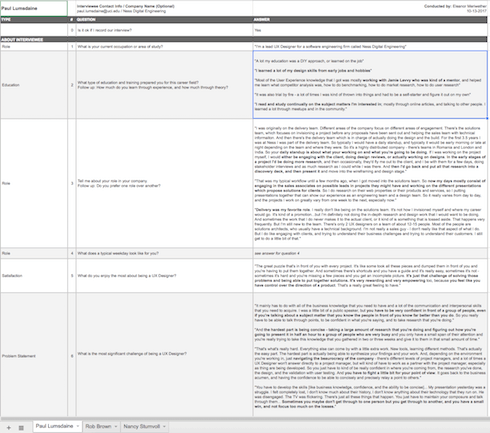
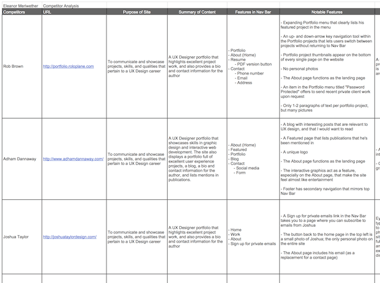
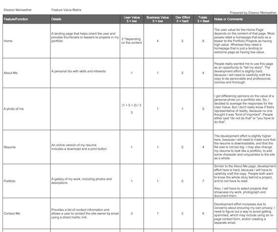
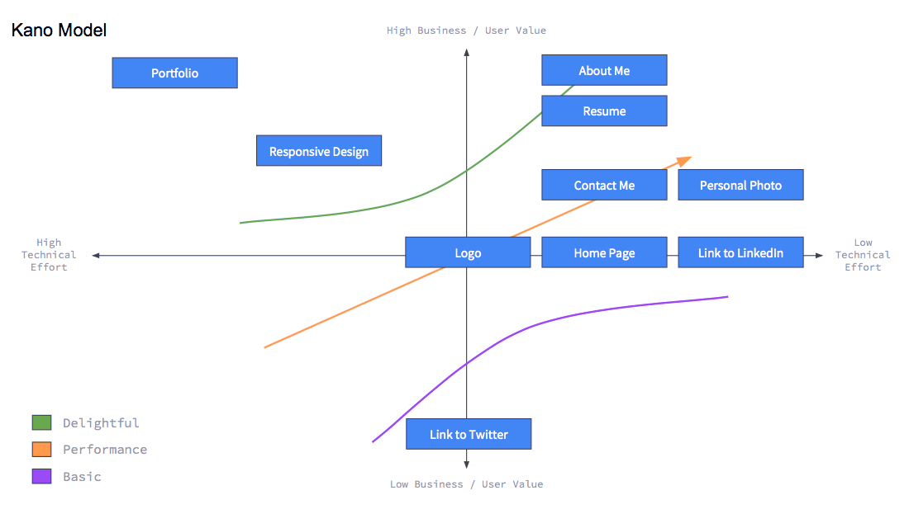
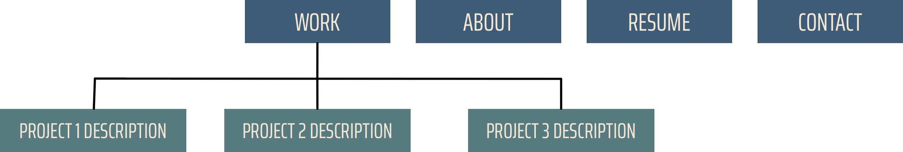
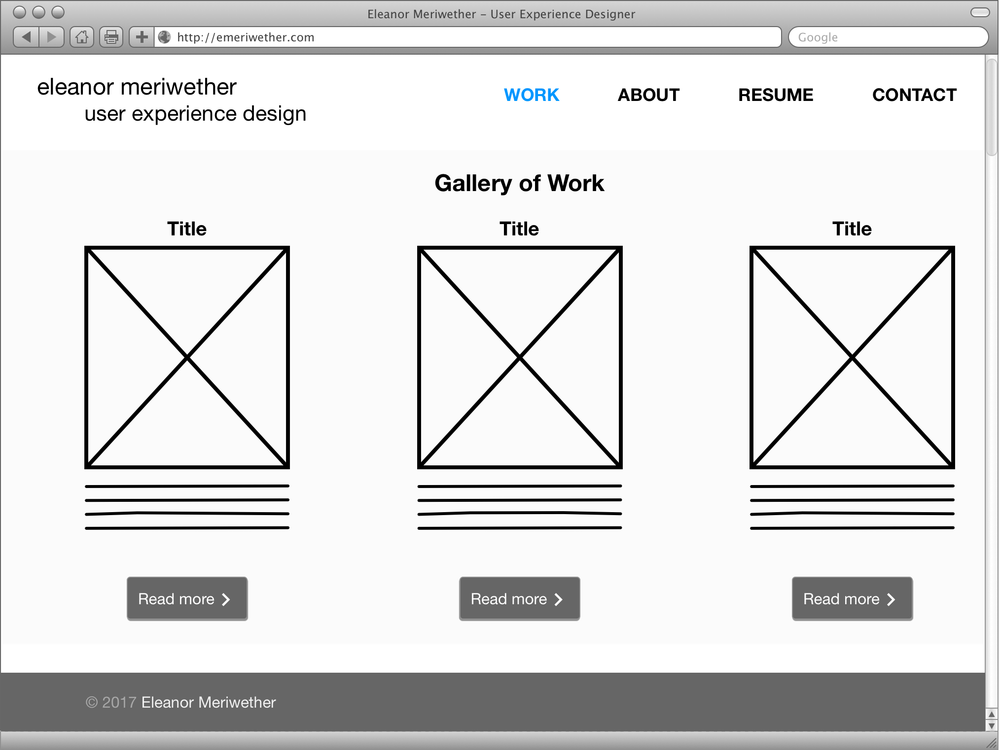
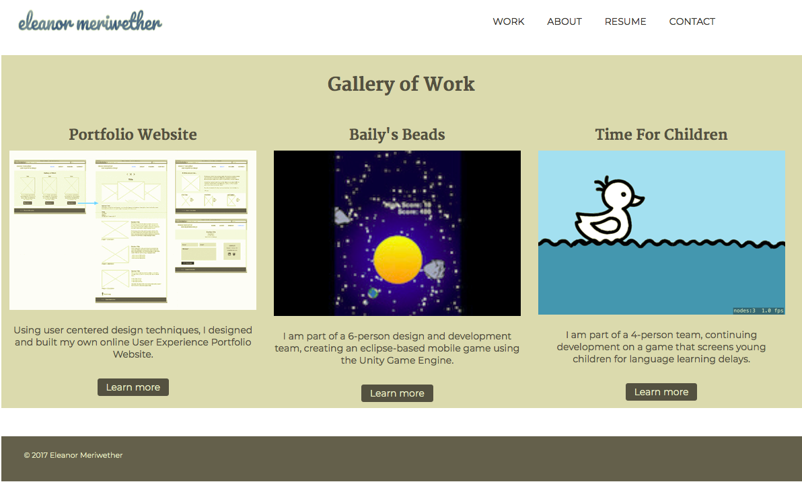
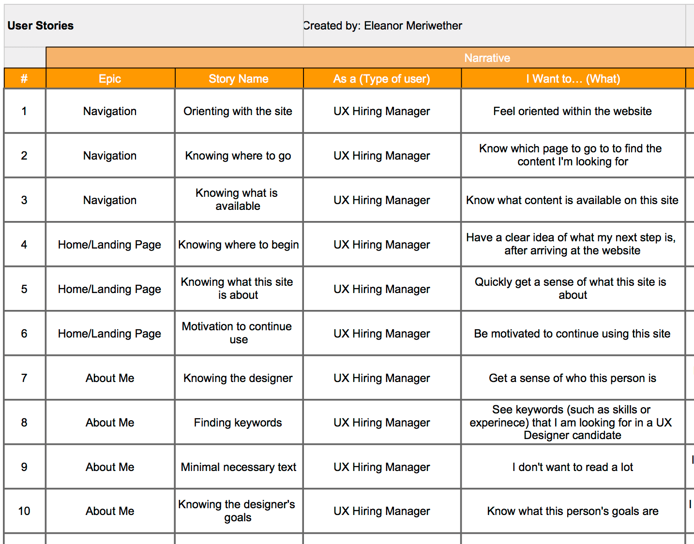
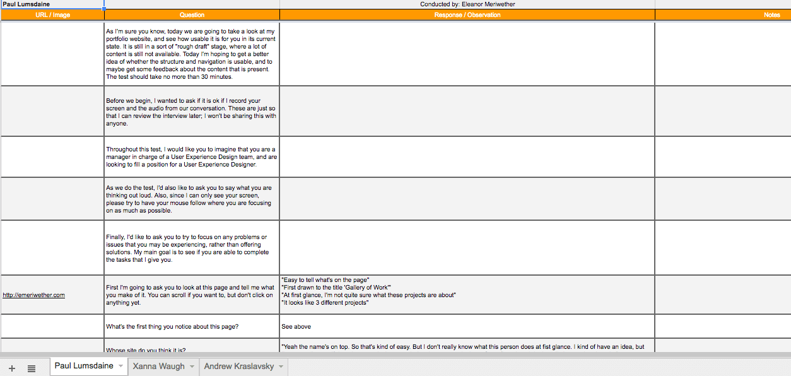
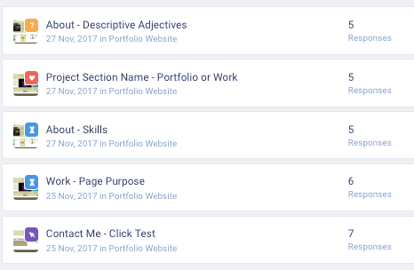

User Research

User Interviews

What:3 one-hour long interviews, with a mix of structured and unstructured questions.
Who: I interviewed 3 current User Experience Designers in lead positions.
Where: The interviews were conducted remotely, with audio only.
Why: I conducted these user interviews to better understand what my users want, and to gain context for the answers I receive in the interviews.
Challenges: On some topics, I received conflicting opinions. For example, one interviewee said it is very important to include a personal photo on a portfolio site, while another interviewee said that doing so is a very bad idea.
Results: Following the user interviews, I was able to confirm that an online portfolio is necessary for getting a job in user experience design. I also gained excellent insight into what lead UX Designers look for in online portfolios when hiring.
Competitor Analysis

What: A table of information noting specific features, content, strengths, and weaknesses of five different portfolios.
Who: I selected the portfolios of five different designers: 4 user experience designers and 1 visual designer.
Why: I conducted this competitor analysis in order to understand what works and what doesn't work in current UX portfolios, and to gain inspiration for how I want to structure my own portfolio site.
How: I selected competitors' portfolios based on the following criteria:
- expressed similar experiences and career goals
- beautifully designed
- utilized a range features and display methods
Challenges: Narrowing down the number of portfolios to include in the analysis was difficult because there are so many good ones. It was also challenging to complete a thorough analysis, because there are so many intricate parts of each site.
View Competitor Analysis
Feature Value Matrix

What: A table listing all the features I wanted to include in my portfolio site. Then, each feature received a rating based on its importance to the user, its importance to the business, and the difficulty involved in its development.
Who: This matrix considered the importance to the business (that's me), the users (anyone who might consider hiring me to do UX Design), and the development team (that's me again).
Why: I created this matrix to ensure that user needs, business needs, and developmental effort are considered for each feature. I also wanted to make it easy to prioritize features.
How: To select the features that went into this matrix, and to determine the values for each feature, I considered the results from my user interviews, the requirements for the class assignment, and what other UX Designers have on their portfolios.
Challenges: It was difficult for me to feel confident while determining the amount of developmental effort involved in each feature, because I have never done this kind of development before.
View Feature Value Matrix
Feature Prioritization Diagram

What: Two infographics, representing the prioritization of my features. One diagram is a one-dimensional line that organizes features from lowest to highest priority. The other diagram is a two-dimensional "Kano Model", where one axis represents the business and user value, and the other axis represents developmental effort.
Why: I created these diagrams to provide a graphic visualization of the priority of my features, and to give me a starting point for development (start with features with high value and low effort).
How: I used the results from the Feature Value Matrix to determine the order and placement of the features.
View Feature Prioritization Diagrams
Design and Initial Development
Site Map

What: A hierarchical organization of the pages I planned to include on my website, as well as the placement of the features I wanted to include.
Why: I created this site map so that I could plan out how many pages I wanted and what I would include on each page.
How: Using the feature value matrix and feature prioritization diagrams, I decided on 4 pages: Work, About, Resume, Contact. Then I placed features on each page based on the results of my competitor analysis and user interviews.
Results: The finished site map provided me with a clear and concise outline that helped me start wireframing the site.
View Site Map
Wireframing

What: Low-fidelity and medium-fidelity wireframes using the Omnigraffle application. You can view my full set of wireframes here.
Why: I created these wireframes to increase the consistency of the site, and the efficency of my development.
Initial Development

What: A live, working website, based on the wireframes I designed.
How: I developed the website using semantic HTML, CSS, and JavaScript. I used the Jekyll framework and GitHub Pages to publish the site. To learn how to do this, I spent a lot of time reading books and taking tutorial classes on lynda.com.
Challenges: Since I've never done web development before, this was the most challenging part of the assignment. Hand-coding the responsiveness of the site required a lot of tinkering and trial-and-error. It was also difficult to pause development before I felt completely satisfied with the site; this was necessary, however, so that I could conduct user testing.
Results: The result of the initial development was a live, working site! (With a lot of placeholders and flaws.) But it was sufficient for user testing, which was the goal. I also ended up with a to-do list that was two pages long, of features that I wanted to test or implement later.
User Testing
User Stories

What: A collection of narratives that describe why users would want to use the features on my site.
Who: I decided to focus on users who are lead UX designers or UX hiring managers, because these are the users I want to target the most. Also, I had the most insight into what these users want, since I interviewed 3 of them.
Why: I created this list of user stories to help me stay user-focused, and to prevent scope creep. The user stories also helped guide the user testing that I conducted.
How: I created the user stories by listing the main features on each page, and then breaking down each feature into individual tasks. Then, using the results from my user interviews, I considered why users would want to complete each task. I also used my own intuition and experience to determine why users would want to complete tasks.
Challenges: It was difficult to place myself in the position of a UX Hiring manager, since I have never actually been in that role. I do worry that I have made some assumptions that would not align with the real users' goals. However, I tried my best to consult the results of my user interviews, so that my answers are grounded in real users' experiences.
View User Stories
Cognitive Walkthroughs

What: 3 half-hour cognitive walkthroughs. Participants were given tasks to complete, and asked to think outloud as they work.
Who: The three participants that took the tests had varying backgrounds, although all three have been in management positions that included hiring new staff. I interviewed one UX Designer, one Production Assistant, and one Software Engineer.
Where: The first test was done remotely (with screen share technology), and the other two were conducted in person.
Why: I conducted these tests to identify usability issues on my portfolio site.
Challenges: At the time of the tests, there were few multi-step or complicated tasks available on the website. So many of the tasks seemed overly simplistic as I was developing the protocol. Additionally, the walkthroughs were conducted over the Thanksgiving holiday, so it was difficult to recruit participants.
Surprises: I thought I knew exactly how people would answer my questions, especially since the tasks were so simple. However, there were several times that I was really thrown off by unexpected answers.
Results: After the three walkthroughs, I had uncovered several large usability errors, as well as several areas where improved usabilty would increase the efficiency of my goals for the site.
View Cognitive Walkthroughs
User Tests

What: Five short user tests, to assess the usability of certain features on my site:
- Test 1 was a short answer test that asked participants to name three adjectives that described the "About" page.
- Test 2 was an A/B test that asked participants to select whether they preferred the project gallery page to be titled "Work" or "Portfolio".
- Tests 3 and 4 were five-second tests, which asked users to find the skills listed on the "About" page, and to determine the purpose of the "Work" page.
- Finally, Test 5 was a click test, asking users to click on where they would go to get ahold of me on the "Contact" page.
Who: I recruited participants myself from a pool of family and friends. About half of the participants were already familiar with the site. The participants had a wide range of careers and technical experience.
Where: I created my tests on usabilityhub.com, and then emailed or messaged participants with the links to each test.
Why: I conducted these tests to help me uncover usability flaws, especially in small, isolated tasks.
Challenges: These tests were necessarily done over the Thanksgiving holiday, so it was difficult to recruit participants. The participants that I did recruit were family and friends, and it seems as though it may have been difficult for them to give me objective feedback. Additionally, most of my participants were unfamiliar with user testing, and so they later told me that they were confused about the rules and expectations for the tests. Finally, usabilityhub.com is not conducive to testing for small screen sizes, so I was only able to get feedback about the desktop version of my site.
Results
Test One:The results for this test included adjectives such as pretty, appealing, eye-catching, soothing, and interesting. Most users also thought the "About" page was clean, clear, un-cluttered, and organized. Finally, two users found the page informational or description.
However, one out of five users found the page asymmetric and sparse, which could suggest a feeling of lack of organization and information. Going forward, I would like to explore why that user felt that way about this page.
View The results of Test One
Test Two:During the cognitive walkthroughs, participants were unsure of what they would find in the "Work" page. This test aimed to try out an alternative label - "Portfolio".
While the results technically suggest that "Work" is users' preferred label, this test nearly resulted in a tie. In fact, the short answers following the test suggest that about half of users think that "Work" is more meaningful and straightforward, while the other half think the same about "Portfolio". Given the near 50/50 tie, I am going to proceed with the label "Portfolio". As I do more cognitive walkthroughs, I will pay attention to whether users are able to better predict what will be on that page.
View The results of Test Two
Test Three:While a few testers were able to locate the skills on this page, their answers were very vauge. I suspect that these three individuals were already familiar with this page, and so had a general idea of where to look. That being said, they still struggled to give precise locations for my list of skills. Furthermore, no tester was able to name any of the skills that I wanted to showcase. So, the results for this test are clear: I need to change the way I present my skillset so that users can find it quickly and easily.
View The results of Test Three
Test Four:Two participants were able to correctly state what the "Work" page is about, although I suspect that these two individuals had received descriptions of this page from me in the past. The remaining four testers were not able to answer this question correctly. This leads me to believe that I need to find a way to make it clearer what the purpose of this page is.
View The results of Test Four
Test Five:Five out of seven testers were not able to answer this question correctly. Possibly, the question itself was confusing. However, it brought to my attention the fact that my email, which was where I was hoping users would click, is not displayed prominently enough. Users should be able to find it right away, and know that is how I want them to get ahold of me. So the results of this test suggest that I should change the way I present my email, so that it easier to find.
View The results of Test Five
Summary of Findings
During my user research, I asked the people I interviewed to describe an ideal portfolio. They used words such as purposeful, personable, professional, insightful, efficient, and organized. My main goal for my portfolio website is to embody these characteristics. As I conducted my competitor analysis, I discovered that simplicity and clarity were most important in reaching my goal, so I kept this in mind as I designed the site. The results of my user research suggests that I have achieved many of the desired traits, although I have a lot of room to improve.
The most conspicuous fault in my current design is a lack of clear purpose. While my intent for this website is very distinct and deliberate, I did not do an adequate job of expressing this in my design and content. Users were unsure of the purpose of the site in general, and also misunderstood what the "Work" page was meant to display. This confusion manifested in both user testing and cognitive walkthroughs, where many participants could not accurately identify the objective of the "Work" page, nor easily return to the Gallery of Work once they have left that page. Furthermore, users were unable to accurately predict what they would find on the project description, because the thumbnail images of the displayed projects were ambiguous, and two projects were about games rather than UX. It is imperative that users easily understand that the "Work" page is meant to showcase my best User Experience projects, and that the site as a whole is meant to promote myself as a User Experience Designer, in order to get a job in UX. To make my purpose for the site and for the "Work" page more impactful, I will need to incorporate better labels and descriptions, and to produce more uniformity in the projects that I display.
The site, as is, lacks a level of efficiency that is necessary for a portfolio website. During the user research that I conducted, I discovered that hiring managers typically browse a portfolio site for a minute or less before deciding whether they want to pursue that candidate. As such, users must be able to find the keywords they are looking for immediately upon arriving at the site. This goal was not fulfilled, particularly on the "About" page. Users failed the five-second test when asked to locate and list the skills that I have included on that page. Users were also unable to efficiently locate my email on the "Contact" page, instead clicking on large distracting titles or on navigation links. My skillset and my email are two of the most important pieces of information for users to walk away with. As such, I must find a way to present these features to users in a way that takes five seconds or less to process.
Incorporation of Findings
As I began synthesize the results of my user tests and cognitive walkthroughs, I started a to-do list of features I would like to improve or include, and tests that I would like to run. This list can be found here. Much of the items on this list regard the feedback I received about a lack of clarity, purpose, and efficiency. I am planning to rewrite the content of the "About" section to be more personable, and to tell my unique story, while also presenting my skillset in a more efficient manner. I will be relabelling several features, such as "About" to "About Me", and "Work" to Portfolio. I will also either replace the game projects in the project gallery with UX projects, or reframe the game projects to feature UX work. I will also include a welcoming note above the Project Gallery section on the "Work" page that introduces users to my site, and informs them of the intent of the site as a whole. While there are many more items on my to-do list that will improve the clarity and purpose of the site, the above are the most imperative changes that I will tackle first.
Additionally, this list includes the removal of the "Resume" page altogether. After some research about the inclusion of resumes on portfolio sites, I found several convincing arguments as to why I should take this feature off my site. Primarily, I want to prevent the theft of my resume, as well as unsolicited interference from recruiters. Users can find this information on LinkedIn, which I link to directly from my site. So, I am planning to remove the "Resume" page and replace it with a note in my "Contact" page that requests that users contact me if they would like my resume.